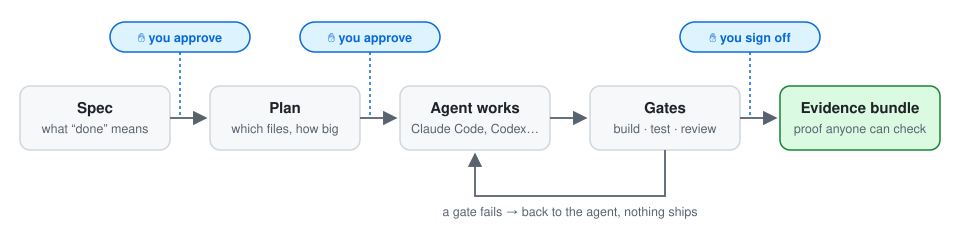
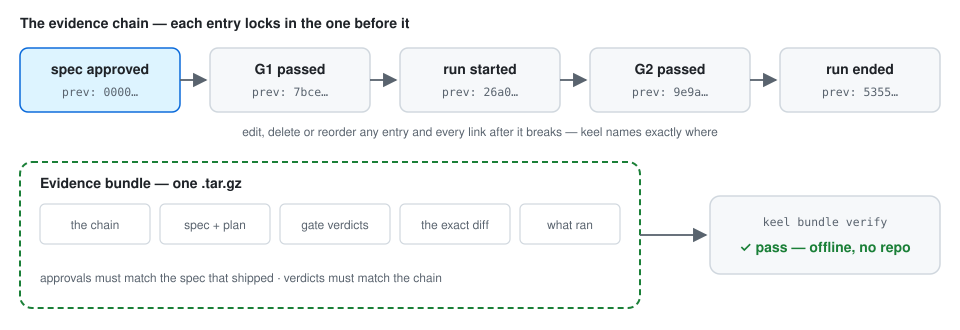
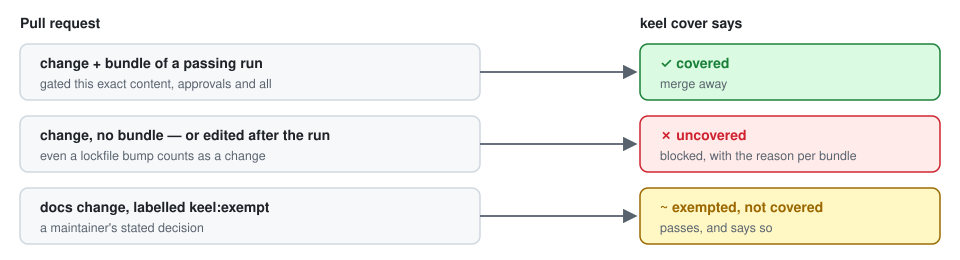
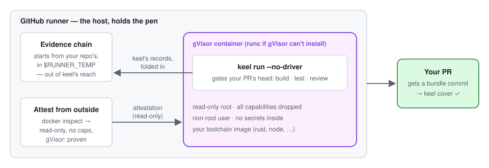

AI coding agents that prove their work.
You say what “done” means. An agent — Claude Code, Codex, Copilot, Kiro — does the work. keel checks it, stops the line when a check fails or you haven't signed off, and keeps a tamper-evident record anyone can verify, even without your repo.
cargo install keel-harnessInstalls a binary called keel. Works with the agent you already use.
Coding agents are brilliant at writing code and bad at knowing when to stop. keel is the part that knows: what “done” means, whether the work got there, and who said so.

Start with one. Each works on its own.
Nothing counts as done until the build and tests are green, a review pass has run, and you've signed off. A gate that fails sends the work back — it never quietly ships.
keel spec new rate-limit # what done means keel approve rate-limit --stage spec keel plan rate-limit # which files, how big keel run rate-limit # agent works, gates judge
Every approval and verdict is locked into a hash chain. One command packs the chain, the spec, the verdicts and the exact diff into a single file that anyone can verify offline, with no access to your code.
keel export keel bundle verify keel-<run>.tar.gz pass members · chain · approvals pass gate-verdicts · trajectory

Add one step to a workflow. A PR passes only if it carries the evidence of
a passing run of exactly its content — or a maintainer labels it
keel:exempt, and the record says so.
# .github/workflows/keel-cover.yml on: pull_request jobs: keel-cover: runs-on: ubuntu-latest steps: - uses: daneb/keel@v0.10.1

GitHub Actions gates each PR inside a locked-down container — gVisor, when the runner has it — keeps the record where that container can't reach it, and commits the evidence back to the PR.
# in a pull_request workflow - uses: daneb/keel/runtime@v0.10.1 with: spec: rate-limit image: rust:1-bookworm

Pair keel with moor: a sandbox per project, no access to your disk, an allowlist for the internet — and keel's record written from outside, so the agent can't rewrite it.
moor new my-app
moor ask my-app "add rate limiting"
moor bundle -p my-app # ✓ bundle pass
keel is built with keel. Every change to it carried a spec, passed its gates, and ships its own evidence bundle.
clippy -D warnings.blocked (exit 3) — never a silent pass.Each gate answers one question and refuses to answer it vaguely.
Every requirement falsifiable, every criterion carrying an oracle. A spec that cannot fail cannot pass either.
Blast radius computed from the import graph and compared with what the plan declared — not with what it hoped.
Build, lint, tests, line budget, blast radius, store drift, baseline ratchet.
G2.5 adds test-invalidation review, and grades the diff for security defects —
a model, a scanner, or both — where high/critical
block the gate.
Evidence complete, change reviewable in size, earlier gates green, a human verdict where one was required.
Episodes classified, promotions proposed, decay reviewed. G4 forces the decision; it does not make it for you.
The checks ran and held.
A check ran and said no.
A check could not run. It never silently passes, and it is never counted as an agentic failure.
All of these are measured by keel on real repositories. The provenance matters as much as the value.
-D warnings.keel's own metrics flag
G2/store-drift: it has never failed in 26 runs across two
repositories. That is either a check that is correctly always-true here, or
gate theatre. A harness that measures other people's work should be able to
say which — so it says so, on its own front page.
Point keel at a repository and take one small change all the way through. The getting-started guide walks the same path with commentary.
# install cargo install keel-harness # binary is called `keel` # set up, then describe one change keel init keel spec new short-invocation keel approve short-invocation --stage spec # plan it, run it, prove it keel plan short-invocation keel run short-invocation keel bundle verify "$(keel export)" # where does it stand? what's next? keel next keel serve # read-only, in a browser